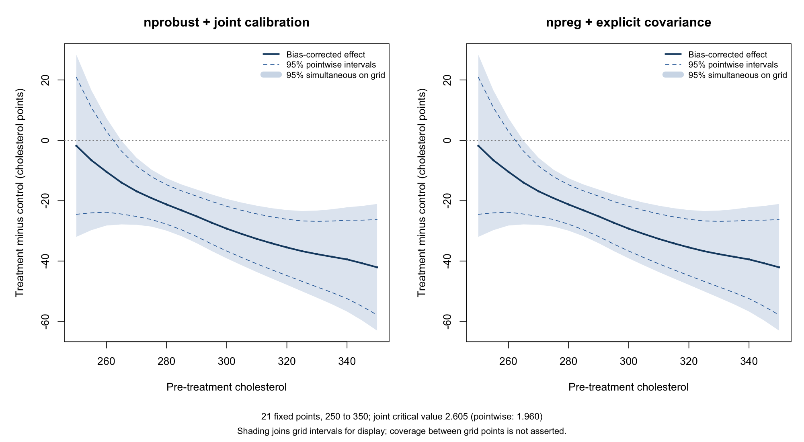

Causal Inference with Local Polynomials
npreg, regression discontinuity, treatment effects, causal inference, simultaneous bands
These examples use npreg() to fit local polynomials inside two causal estimators. Each standalone script first computes a reference result with the authors’ package, then reproduces the estimate and inference using npreg plus explicit bias-correction and covariance calculations. The causal interpretation comes from the study design and its identifying assumptions.
Download a script and run it with source(). It retrieves a pinned copy of the public data and writes a PNG and comparison tables to np_causal_results in your working directory. The scripts require np 0.80-1 or later and either rdrobust or nprobust; they do not install packages. The results below were checked with np 0.80-1, rdrobust 4.1.1, and nprobust 1.0.0.
Randomized treatment effects with simultaneous bands
The cholesterol example uses the Efron–Feldman randomized-trial data supplied with nprobust. It compares expected post-treatment cholesterol between assignment groups, conditional on pre-treatment cholesterol. There are 172 control and 165 treatment observations. The post-treatment compliance variable is not used. The regression illustration follows Calonico, Cattaneo and Farrell (2019).
Download the complete cholesterol script.
Each arm uses local linear regression with the authors’ IMSE-DPI bandwidths, a quadratic bias correction, Epanechnikov kernels and HC0 covariance. The effect is the difference between the two bias-corrected means; the covariance matrices add across the independent arms. npreg supplies the regression and second-derivative pilot fits, and the script reproduces the authors’ full covariance across evaluation points.

The simultaneous band is an additional inference step, applied identically to both implementations. It uses 50,000 joint Gaussian draws, seed 20261011, and the maximum absolute standardized deviation across the fixed grid \(250,255,\ldots,350\). The resulting critical value is 2.605, versus 1.960 for pointwise intervals. This calibration preserves dependence between the estimates; the general Gaussian-maximum approach is discussed by Chernozhukov, Chetverikov and Kato (2013).
The same calibration tests whether the effect is zero at every grid point. Here the maximum statistic is 7.779, exceeding every simulated maximum. The reported Monte Carlo p-value is at its resolution limit, about \(2\times10^{-5}\); it is not an exact tail probability. This rejects the all-zero curve, while the band still includes zero at baseline values 250, 255 and 260. It does not establish an effect everywhere or test whether the effect is constant.
Coverage is approximate and simultaneous over these 21 points, not every point of a continuous interval. The shaded polygon joins intervals for display. The calculation holds the selected bandwidths fixed and relies on the usual asymptotic conditions, including sufficiently small remaining bias after correction. These are confidence bands for the conditional mean contrast, not prediction bands for individual outcomes.
The script checks the bias-corrected estimates, standard errors, covariance, band endpoints and joint test against the author-package calculation. Download the np band values, author-package band values, numerical checks, or joint-test results.
# Conditional treatment effects: author package, then npreg, with simultaneous bands.
# Requires np >= 0.80-1 and nprobust (tested with 1.0.0). No installation is performed.
# Run with source("cholesterol_simultaneous.R") or Rscript cholesterol_simultaneous.R.
# Output goes to np_causal_results, or the directory NP_CAUSAL_OUTPUT specifies.
# Calonico, Cattaneo & Farrell (2019), https://doi.org/10.18637/jss.v091.i08
# Trial data: Efron & Feldman (1991). t is randomized assignment, not compliance.
# Author-supported choices: Epanechnikov, p=1, IMSE-DPI, HC0 (rather than default NN).
# The joint Gaussian calibration is an added finite-grid inference step, not an
# nprobust default or a replication of a simultaneous band printed in the article.
library(np)
library(nprobust)
stopifnot(packageVersion("np") >= "0.80.1")
options(np.messages = FALSE)
out <- Sys.getenv("NP_CAUSAL_OUTPUT", "np_causal_results")
dir.create(out, recursive = TRUE, showWarnings = FALSE)
data_file <- file.path(out, "nprobust_data.csv")
if (!file.exists(data_file)) download.file(paste0(
"https://raw.githubusercontent.com/nppackages/nprobust/",
"dfcb562d34822c75528c1c2d8a5a153be6b3a683/R/nprobust_data.csv"), data_file, mode = "wb")
d <- read.csv(data_file)
stopifnot(all(complete.cases(d[c("t", "chol1", "cholf")])) , all(d$t %in% 0:1))
grid <- seq(250, 350, by = 5) # Fixed 21-point target; no continuum-coverage claim.
# A. Author-package fits and their full robust covariance across the grid.
author <- lapply(0:1, function(arm) {
use <- d$t == arm
lprobust(y = d$cholf[use], x = d$chol1[use], eval = grid,
p = 1, kernel = "epa", bwselect = "imse-dpi", vce = "hc0", covgrid = TRUE)
})
author_tau <- author[[2]]$Estimate[, "tau.bc"] - author[[1]]$Estimate[, "tau.bc"]
author_V <- author[[1]]$cov.rb + author[[2]]$cov.rb # independent randomized arms
write.csv(do.call(rbind, lapply(0:1, function(arm) data.frame(arm,
x = grid, h = author[[arm + 1]]$Estimate[, "h"], b = author[[arm + 1]]$Estimate[, "b"]))),
file.path(out, "cholesterol_bandwidths.csv"), row.names = FALSE)
# B. Public npreg calls for point and pilot fits; explicit CCF HC0 covariance.
# Helpers are included so this script has no local-file dependencies.
# Local-linear robust bias correction, with a quadratic pilot and HC0 variance.
# The point estimate and second derivative are fitted by the public np API.
# Explicit equivalent weights implement the CCT/CCF covariance formula;
# np's ordinary se() uses a different residual convention.
np_rbc_hc0 <- function(x, y, at, h, b) {
stopifnot(length(x) == length(y), all(is.finite(c(x, y, at, h, b))),
length(at) == 1L, h > 0, b > 0)
z <- x - at
fit <- np::npreg(txdat = z, tydat = y, exdat = 0, bws = h / sqrt(5),
regtype = "ll", ckertype = "epanechnikov", ckerorder = 2,
bwtype = "fixed", bwscaling = FALSE, se = FALSE)
pilot <- np::npreg(txdat = z, tydat = y, exdat = 0, bws = b / sqrt(5),
regtype = "lp", degree = 2, bernstein.basis = FALSE,
gradients = TRUE, gradient.order = 2, ckertype = "epanechnikov",
ckerorder = 2, bwtype = "fixed", bwscaling = FALSE, se = FALSE)
# Centered/scaled designs keep the small coefficient calculations well conditioned.
R <- cbind(1, z / h)
Q <- cbind(1, z / b, (z / b)^2)
wh <- pmax(1 - (z / h)^2, 0)
wb <- pmax(1 - (z / b)^2, 0)
P <- solve(crossprod(R, R * wh), t(R * wh))
B <- solve(crossprod(Q, Q * wb), t(Q * wb))
ell <- P[1, ]
moment2 <- sum(ell * z^2)
ell_bc <- ell - moment2 * B[3, ] / b^2
residual_p <- y - as.numeric(R %*% (P %*% y))
residual_q <- y - as.numeric(Q %*% (B %*% y))
conventional <- as.numeric(fitted(fit))
corrected <- conventional - moment2 * as.numeric(np::gradients(pilot)) / 2
stopifnot(abs(conventional - sum(ell * y)) < 1e-7,
abs(corrected - sum(ell_bc * y)) < 1e-7)
list(estimate = conventional, corrected = corrected,
se = sqrt(sum((ell * residual_p)^2)),
se_rb = sqrt(sum((ell_bc * residual_q)^2)),
influence = ell_bc * residual_q)
}
# Conditional Gaussian calibration, simultaneous over a FIXED finite grid.
# The same draw is shared across all points through the joint covariance.
grid_max_t <- function(covariance, estimate, B = 50000L, seed = 20261011L) {
se <- sqrt(diag(covariance))
stopifnot(all(is.finite(se)), all(se > 0))
correlation <- covariance / outer(se, se)
root <- chol(correlation) # Fail if the supplied covariance is not positive definite.
set.seed(seed)
draws <- matrix(rnorm(nrow(root) * B), nrow(root), B)
maxima <- apply(abs(t(root) %*% draws), 2, max)
statistic <- max(abs(estimate / se))
list(critical = unname(quantile(maxima, 0.95, type = 1)),
statistic = statistic, p = (1 + sum(maxima >= statistic)) / (B + 1),
B = B, seed = seed, se = se)
}
np_fits <- np_cov <- list()
checks <- list()
for (arm in 0:1) {
use <- d$t == arm
ref <- author[[arm + 1]]$Estimate
fits <- lapply(seq_along(grid), function(j) np_rbc_hc0(
d$chol1[use], d$cholf[use], grid[j], h = ref[j, "h"], b = ref[j, "b"]))
np_fits[[arm + 1]] <- t(vapply(fits, function(z) c(z$estimate, z$corrected, z$se, z$se_rb), numeric(4)))
colnames(np_fits[[arm + 1]]) <- c("tau.us", "tau.bc", "se.us", "se.rb")
np_cov[[arm + 1]] <- tcrossprod(do.call(rbind, lapply(fits, `[[`, "influence")))
checks[[arm + 1]] <- data.frame(arm,
max_estimate_se_error = max(abs(np_fits[[arm + 1]] - ref[, colnames(np_fits[[arm + 1]])])),
max_covariance_error = max(abs(np_cov[[arm + 1]] - author[[arm + 1]]$cov.rb)))
}
checks <- do.call(rbind, checks)
stopifnot(max(as.matrix(checks[-1])) < 1e-7)
np_tau <- np_fits[[2]][, "tau.bc"] - np_fits[[1]][, "tau.bc"]
np_V <- np_cov[[1]] + np_cov[[2]]
# C. Same joint calibration applied independently to both implementations.
# Bandwidths are held fixed. Standard asymptotic conditions, including negligible
# remaining bias after correction, are needed. These are approximate 95% bands.
author_cal <- grid_max_t(author_V, author_tau)
np_cal <- grid_max_t(np_V, np_tau)
stopifnot(abs(author_cal$critical - np_cal$critical) < 1e-7,
abs(author_cal$statistic - np_cal$statistic) < 1e-7,
author_cal$p == np_cal$p)
band <- function(tau, cal) data.frame(x = grid, estimate = tau, se = cal$se,
point_lower = tau - qnorm(.975) * cal$se, point_upper = tau + qnorm(.975) * cal$se,
simultaneous_lower = tau - cal$critical * cal$se,
simultaneous_upper = tau + cal$critical * cal$se)
author_band <- band(author_tau, author_cal)
np_band <- band(np_tau, np_cal)
stopifnot(max(abs(as.matrix(author_band - np_band))) < 1e-7)
write.csv(checks, file.path(out, "cholesterol_inference_comparison.csv"), row.names = FALSE)
write.csv(author_band, file.path(out, "cholesterol_author_bands.csv"), row.names = FALSE)
write.csv(np_band, file.path(out, "cholesterol_np_bands.csv"), row.names = FALSE)
test <- data.frame(method = c("nprobust + joint calibration", "npreg + explicit covariance"),
critical = c(author_cal$critical, np_cal$critical),
max_t = c(author_cal$statistic, np_cal$statistic),
monte_carlo_p = c(author_cal$p, np_cal$p), B = np_cal$B, seed = np_cal$seed)
print(checks, digits = 6)
print(test, digits = 6, row.names = FALSE)
cat("Test null: treatment effect equals zero at every one of the 21 grid points.\n",
"This does not test whether the treatment effect is constant.\n",
"The Monte Carlo p-value has resolution 1/(B+1); a floor value is not an exact tail probability.\n")
write.csv(test, file.path(out, "cholesterol_joint_test.csv"), row.names = FALSE)
png(file.path(out, "cholesterol_simultaneous.png"), width = 2000, height = 1100, res = 160)
par(mfrow = c(1, 2), mar = c(5.1, 5.0, 3.4, 1.0), oma = c(2.7, 0, 0, 0))
limits <- range(author_band[c("simultaneous_lower", "simultaneous_upper")], 0)
for (s in 1:2) {
tab <- list(author_band, np_band)[[s]]
plot(grid, tab$estimate, type = "n", ylim = limits,
xlab = "Pre-treatment cholesterol", ylab = "Treatment minus control (cholesterol points)",
main = c("nprobust + joint calibration", "npreg + explicit covariance")[s])
polygon(c(grid, rev(grid)), c(tab$simultaneous_lower, rev(tab$simultaneous_upper)),
col = adjustcolor("#2667A5", .16), border = NA)
abline(h = 0, col = "grey50", lty = 3)
lines(grid, tab$point_lower, col = "#2667A5", lty = 2)
lines(grid, tab$point_upper, col = "#2667A5", lty = 2)
lines(grid, tab$estimate, col = "#174970", lwd = 2.5)
points(grid, tab$estimate, col = "#174970", pch = 16, cex = .45)
legend("topright", c("Bias-corrected effect", "95% pointwise intervals", "95% simultaneous on grid"),
col = c("#174970", "#2667A5", adjustcolor("#2667A5", .25)),
lty = c(1, 2, 1), lwd = c(2.5, 1, 9), bty = "n", cex = .8)
}
mtext(sprintf("21 fixed points, 250 to 350; joint critical value %.3f (pointwise: 1.960)", np_cal$critical),
side = 1, outer = TRUE, line = .15, cex = .85)
mtext("Shading joins grid intervals for display; coverage between grid points is not asserted.",
side = 1, outer = TRUE, line = 1.25, cex = .82)
dev.off()
capture.output(sessionInfo(), file = file.path(out, "cholesterol_sessionInfo.txt"))Observational treatment effects with cross-fitting
For a workflow with many adjustment covariates, see Doubly Robust Treatment Effects. That companion example follows Fan, Hsu, Lieli and Zhang: estimate nuisance functions outside each held-out fold, construct doubly robust scores, and use npreg for the final local-linear CATE curves. A seeded simulation with known truth shows pointwise intervals and simultaneous multiplier bands. The page explains the identifying assumptions and the explicit exponential-weight choice, and supplies a standalone script and reference-verification notes.
Difference-in-differences with changing composition
For repeated cross-sectional data, see Difference-in-Differences with Changing Composition. That example revisits Sant’Anna and Xu’s tariff-evasion application, freshly estimating generalized propensities with npconmode and outcome regressions with npreg. A standalone script produces the published/np ATT comparison table and clustered standard errors. The page explains the adaptations and their broad agreement with the published results.
What is supplied by np?
In the RD and trial examples above, npreg supplies the local-polynomial point and pilot fits. The scripts add the cited bias correction and HC0 covariance formulas explicitly: ordinary se() and plotting bands use different uncertainty conventions and are not substitutes for these calculations. The authors’ packages supply the specialized bandwidths and serve as numerical references. The simultaneous contrast band is an extension of their pointwise example, not a band claimed to appear in the original article.
For other fitting and plotting examples, see Worked Examples and Plotting and Intervals.